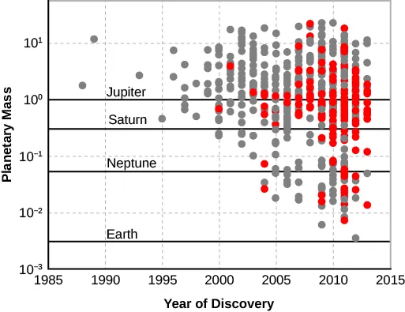

survey
ASTR 101 · Lecture 14
Frontiers, Synthesis, and Evaluating Claims
Evidence, model, and quantitative reasoning
Learning Goals
- Explain why this lecture's central phenomenon matters: modern astronomy grows through surveys, missions, time-domain alerts, gravitational waves, neutrinos, and exoplanet discoveries that extend the same evidence habits developed all term.
- Use the key model idea that a scientific claim connects evidence to a model while preserving uncertainty.
- Apply the lecture's quantitative tool with units, assumptions, and a physical interpretation.
- Correct the misconception: A high-confidence press image or artist concept is not itself evidence; it illustrates an interpretation of data.
Reading anchor: OpenStax Astronomy 2e, Chapters 30.1-30.4 and selected review links on exoplanets, life, surveys, and evaluating evidence.
Why This Question Matters
Modern astronomy advances by asking how strong a claim is compared with the evidence behind it. Surveys, exoplanets, gravitational waves, and transient alerts all extend the same evidence habits developed in this course.
Opening Phenomenon
Modern astronomy grows through surveys, missions, time-domain alerts, gravitational waves, neutrinos, and exoplanet discoveries that extend the same evidence habits developed all term.
First question: what is directly observed, and what part is an explanation built from a model?
Vocabulary for Reasoning
selection effect
transit
radial velocity
multi-messenger astronomy
biosignature
uncertainty
source evaluation
Use these terms to describe evidence and relationships, not as isolated vocabulary.
Evidence We Need to Explain
- Exoplanet discoveries depend strongly on detection method and selection bias.
- Transient astronomy combines rapid alerts with follow-up observations.
- Claims about life, black holes, or cosmology require stronger evidence than headlines often provide.
Physical or Geometric Model
- A scientific claim connects evidence to a model while preserving uncertainty.
- Different observing methods reveal different parts of parameter space.
- Ethics of sky access includes light pollution, satellite constellations, cultural sky knowledge, and data stewardship.
Quantitative Tool
\[ \text{strong claim} \Rightarrow \text{clear evidence} + \text{tested model} + \text{stated uncertainty} \]
Separate the evidence, the model, and the uncertainty before assigning confidence.
Worked Example
- A claimed Earth-like exoplanet may be Earth-sized, in a habitable-zone orbit, or compositionally Earth-like; these are different claims.
- A careful evaluation asks which measurement supports which part of the claim.
- The same standard applies across the course.
The answer should identify what evidence would raise or lower confidence.
Visual Reasoning
Use the visual to evaluate the evidence behind a claim: what is observed, what is modeled, and what uncertainty remains.
- What is the claim?
- What evidence would support it?
- What uncertainty limits confidence?

Common Misconception
A high-confidence press image or artist concept is not itself evidence; it illustrates an interpretation of data.
Correct it by separating the image or headline from the evidence behind the claim.
Active Learning Segment
Students critique two astronomy news claims, identifying evidence, model, uncertainty, missing context, and what measurement would change confidence.
Write a prediction first, compare reasoning with a neighbor, then revise your answer in one sentence.
Lab or Observing Connection
The final portfolio workshop connects observing practice, evidence, and communication. Your synthesis should connect a claim to evidence, model assumptions, and remaining uncertainty.
Synthesis
The course ends where astronomy begins: with awe disciplined by measurement, model testing, and intellectual humility.
- What claim did you evaluate?
- What evidence mattered most?
- What uncertainty remains?
References and Visual Credits
- OpenStax, Astronomy 2e: OpenStax Astronomy 2e, Chapters 30.1-30.4 and selected review links on exoplanets, life, surveys, and evaluating evidence.
- Local reference copy:
references/openstax-astronomy-2e.pdf. - Visual: Early detections cluster at high masses because detection methods favored large, close-in planets. Credit: OpenStax Astronomy 2e, Fig. 14.17, CC BY-NC-SA 4.0.